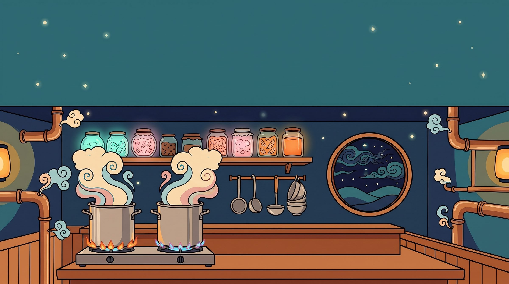
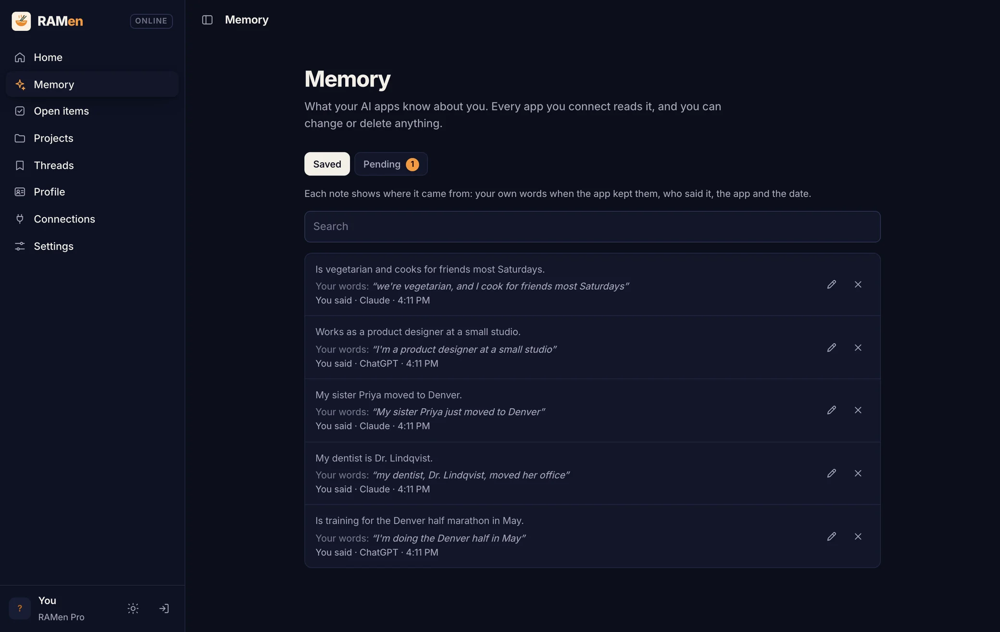
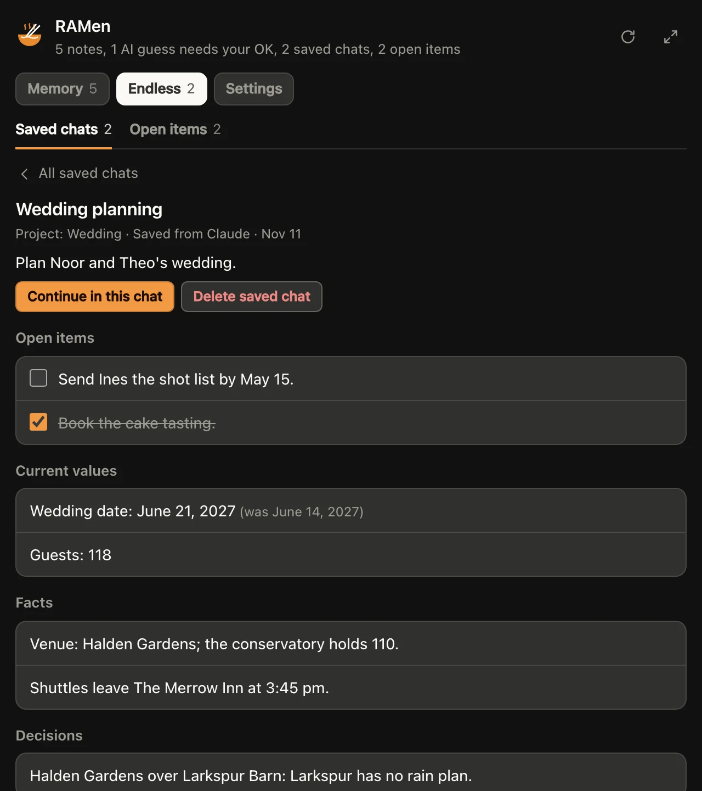

How RAMen works
Each of RAMen's three features a little more closely, and the ways to get them.
Three features. Many ways in.
RAMen has three features: RAMen Memory, RAMen Endless and RAMen Desktop. You get them through the RAMen connector in Claude and ChatGPT, the RAMen add-on for Chrome, RAMen Desktop and the Claude Code plugin, with one account and one plan.
Selective memory, on demand. In Claude and ChatGPT, your AI calls RAMen when it needs your memory or a saved chat, on the plan you already pay for. RAMen keeps everything and hands back only the part that matters, so your AI stops carrying everything in every message. That is where the token savings come from: about 1,200 tokens an answer instead of a 23,000-token conversation, and 83% fewer to keep a long chat going. (Selective reading in RAMen Desktop is a different thing: it makes long chats faster on your own computer.)
One memory for all your AIs.
Your AI saves what you tell it to RAMen and looks it up later, in any chat and in every app where you use RAMen, even with your computer off.
Receipts. Every note keeps the date, the app and whether you said it or the AI guessed, and your exact words when your AI saves them. A guess waits until you approve it; until then, no app uses it.
Sensitive topics. Health, money and other sensitive topics are saved like anything else. You can turn any of them off under Advanced settings on your RAMen page.
Search everything. Ask "What did I decide about the venue?" and your AI searches every note and saved chat at once, and says where each answer came from.
Your profile card. A few lines on how you like answers: length, tone, format, what to call you. Your AI gets it with your memory, so it answers your way in every app.
Must-know facts. Mark up to 12 facts every AI should keep in mind, like an allergy, a medicine or where you live. Your AI gets them first whenever it checks your memory, and the RAMen add-on puts them under your first message in each new chat, so a question about a headache or a dinner idea gets an answer that fits you. Turn them on and off on your RAMen page, in the memory panel or in the add-on.
See and forget. Ask your AI what RAMen keeps about you, and in apps that show connector panels (MCP Apps), such as Claude, a memory panel opens right in the chat: approve, edit or delete from there. To forget something, just ask; RAMen says what it deleted. Everything is also on your RAMen page.
Autopilot. One switch on your RAMen page, on from the start: long chats are saved as they go (RAMen Pro), a fact you say twice is kept once, and notes that look like must-know facts are offered for your OK. In Chrome, the add-on also offers a fresh chat when one gets too long. Turn Autopilot off and RAMen does only what you or your AI ask; under Fine-tune you can switch single parts.
Bring your history. RAMen Desktop reads your ChatGPT and Claude exports (ramen import) and links them to your memory (ramen online).
In Claude, add the line from the setup to Claude's instructions, or Claude may use its own memory first.

Your RAMen page, shown with sample notes.
One conversation, any number of chats.
Every reply in a long chat re-reads the whole chat. That uses up your limits, and details start to slip. Say "Save this chat to RAMen", then "Continue my RAMen thread" in a fresh chat or another AI.
83% fewer tokens to keep going. In our test, an 80-message chat was saved, then 48 questions about it were asked in fresh chats. Re-sending the whole chat used 32,539 tokens an answer with Claude Sonnet 5.5; going on from the RAMen save used 5,478, 83% fewer, and all 48 answers were right. Claude Haiku 5.5 and GPT-6 Luna also got 48 of 48 from the save. A copied summary used fewer tokens still but got 45 to 47 right. Saving the chat once took the AI about 6,100 tokens of writing.
Saved as you go. With the RAMen add-on, a chat on any of the 11 AI sites is saved to your RAMen every 15 messages: its goal, its details, its to-dos and the AI's latest answer. In apps with only the connector, ask your AI to save the chat. It can also save on its own as a long chat grows, but not reliably: in our test, Claude Haiku 5.5 with the line from the setup saved a 45-message chat on its own once, at message 44. Turn it off on your RAMen page.
Merged, not overwritten. Each save merges into the thread: changed values keep what they were before, and drafts keep their newest version, word for word. In our test, a thread kept 98% of what was known after three hand-offs between apps; copied summaries kept 85 to 88%.
Open items. Every to-do and open question from your saved chats, in one list. Tick them off on your RAMen page, or tell your AI they are done.
Projects. Put saved chats in a project. In a new chat, say "Load my wedding project" to bring back its goal, current values, decisions, open items and drafts. Apps that list a connector's prompts show each project there too.
Added RAMen to Claude before? Refresh its tools list once in Settings › Customize › Connectors.

A saved chat in the memory panel, shown in a test page with sample data.
Every detail of the chat you're in.
Detail Lock comes with the RAMen add-on for Chrome, in the Chrome Web Store. On ChatGPT, Claude, Gemini, Grok, Perplexity, Copilot, DeepSeek, Mistral, Meta AI, Poe and Qwen, it lists the details you set as you chat: limits, names, dates, things to leave out, formats and rules. A later detail about the same thing replaces the earlier one.
Once RAMen estimates the chat is too long for the AI to see it all (from the chat's length and how much each site's AI sees), it adds the short list to each message you send (or always, or never: your choice). When an answer comes, its own rules check limits, names, things to leave out, units, years and tables, and flag any detail the answer dropped.
Remind it puts a short reminder in the message box. Fresh start with everything opens a new chat with your goal, every detail and the last answer in one message. Nothing is sent until you press Send.
Smarter checks are optional: Chrome's built-in AI, or RAMen Desktop on the same computer, looks at the details the rules cannot check. Detail Lock's lists stay in your browser, except in your own messages and in the saves of a long chat to your own RAMen. RAMen for Chrome
A switch, with a cost. Detail Lock is for when exact details matter. In the add-on's Settings, choose when the list goes along and whether it checks answers; never, with checks off, turns it off, and it is off on RAMen Free. While it is on, your messages are longer: in our 150-message test, RAMen's tools (about 2,700 tokens a request) and the list (about 600 tokens a message) had the AI read 2.2 to 2.5 times the tokens. Endless is the part that saves tokens.
Chats that come back in seconds.
RAMen Desktop runs AI models on your own computer (Mac, Windows and Linux) and keeps each chat's memory on disk, so a chat comes back in seconds, even after a restart.
Real time, Mac mini M2 Pro, Qwen3 4B: a 70K-token chat back in 3.7 seconds, where reading it again took 12 minutes 47.
Long chats stay fast too: normally each new word reads the whole chat in memory. RAMen's selective reading reads its start, its most recent part and the parts that match best, about 8,000 tokens, once a chat is long enough for that to be faster (about 16K tokens on Macs, 21K to 42K on NVIDIA cards). It is on with a license; in our tests it gave the same answers as full attention when finding details in chats up to 64K tokens. llama.cpp can save a chat by hand; RAMen does it for every chat.
Fewer tokens in long chats. RAMen re-sends earlier answers lean: no formatting, and older ones only when your message needs them. You still see every answer. On by default with your own Claude or OpenAI key; for local models, ramen start --lean-history on.
Measured, November 2026. 24-turn chats: 70% fewer tokens with Claude Sonnet 5.5, 67% with Qwen3 4B, answers judged as good, blind, turn by turn. Recalling earlier details: 7 of 29 right, 6 of 30 with the whole history, reading 63% fewer tokens. Memory on LoCoMo: about 1,200 tokens an answer, 6,400 for Mem0, 23,000 for the whole chat (16, 17, 19 of 20 right).
With Pro
Memory for local models. ramen online links the computer to your RAMen Memory: your local models know what you told Claude and ChatGPT.
Sleep notes. ramen sleep pauses RAMen while your own model reads each new chat and writes careful notes of what you told it, in your words. After that, every app gets the few notes that match each question. ramen sleep --forget deletes them all.
Claude Code and Codex on local models. ramen claude and ramen connect codex run them on a model on your computer. RAMen speaks the OpenAI, Anthropic and Ollama APIs, so other apps work as they are.
Models bigger than your memory.
Mixture-of-experts models use a few experts per word. RAMen streams the experts it needs from the SSD into its own cache. Same answers.
| Mac mini M2 Pro, 16 GB | What | Plain llama.cpp | RAMen |
|---|---|---|---|
| gpt-oss 120B (63 GB) | Reading a 1,233-token prompt | 14 tok/s | 62 tok/s |
| Starting the model | 41 s | 5 s | |
| Qwen3 30B-A3B (18.5 GB) | Reading a long prompt | 20 tok/s | 101 tok/s |
| Writing | 7 to 13 tok/s | 11 to 15 tok/s | |
| Starting the model | 12 s | 2 s |
gpt-oss 120B writes at 2.8 tokens per second, up from 1.9. Big models suit background and agent work.
One account. Four ways in.
The RAMen connector
Inside Claude on the web, desktop and phone, ChatGPT on paid plans, and other AI apps that take connectors. You add it once and sign in with your RAMen key. The setup
The RAMen add-on for Chrome
On the AI websites in Chrome, including the ones that cannot take a connector: Detail Lock, your memory and Endless. RAMen for Chrome
RAMen Desktop
The app for Mac, Windows and Linux, for AI that runs on your own computer. Install it
The Claude Code plugin
The same memory in your coding sessions:
/plugin install ramen-memory --marketplace MatthewLeibel/ramen-pluginsMeasured results.
| Memory | Without RAMen | With RAMen |
|---|---|---|
| The RAMen connector, Claude Haiku and Sonnet 5.5 choosing by themselves when to look something up | 2 to 13% right | 100% right (45 of 45) |
| RAMen Memory with Claude Sonnet 5.5, no Sleep and no computer: Claude saved what it chose while chatting, then answered 45 questions in fresh chats | 2 to 7% right | 93% right |
| RAMen Sleep, Mac mini M2 Pro, Qwen3 4B: 45 questions about a made-up person's ten earlier chats, asked in fresh chats | 2% right | 98% right |
| Sleep's notes in front of Claude (Haiku, Sonnet and Opus 5.5), five made-up people | 2 to 13% right | 98 to 100% right |
| Sleep's notes in front of GPT (GPT-6 Luna, GPT-6.1 Sol), the same five people | 0 to 5% right | 95 to 100% right |
| Endless | Without RAMen | With RAMen |
|---|---|---|
| Going on from a save: an 80-message chat, then 48 questions about it in fresh chats, Claude Sonnet 5.5 | The whole chat re-sent: 32,539 tokens an answer, 48 of 48 right | 5,478 tokens an answer, 48 of 48 right: 83% fewer tokens |
| The same questions, three AIs: Claude Sonnet 5.5, Claude Haiku 5.5 and GPT-6 Luna | A copied summary: 1,764 to 2,736 tokens an answer, 45 to 47 of 48 right | 4,669 to 5,491 tokens an answer, 48 of 48 right with each |
| The next day, in another AI: a 150-message planning chat with Claude Haiku 5.5, the same messages sent with and without RAMen; then a fresh chat with ChatGPT's model (GPT-6.1 Sol) asked about the plan | 0 of 21 details | 18 of 22 details |
| Facts about you, in the other app: told to ChatGPT's model during the chat, asked in Claude Haiku 5.5 the next day | 0 of 7 | 6 of 7 |
| Detail Lock, while it is on | Without RAMen | With RAMen |
|---|---|---|
| Once the chat is too long for the AI to see it all: ChatGPT's model with its latest ~7,000 tokens in view, messages 1 to 93 | 92% of details kept (14 dropped) | 98% kept (3 dropped): 4.7 times fewer dropped |
| While the AI still sees the whole chat: ~14,000 and ~20,000 tokens in view, and Claude Haiku 5.5 with all of it | 97 to 98% kept | 96 to 99% kept: about even |
| What it costs: the same 150-message test, with RAMen's tools in every request and the list in long chats | The chat alone | 2.2 to 2.5 times the input tokens |
| Must-know facts | RAMen's search alone | With must-know facts |
|---|---|---|
| Claude Haiku 5.5: 60 requests where a saved fact changes the right answer (a headache while on warfarin, a Thai dinner with a peanut allergy), each in a fresh chat, from 20 made-up people (with no memory at all: 27 wrong) | 21 wrong | 3 wrong with the connector, 1 with the add-on: 7 times fewer |
| Claude Sonnet 5.5, 20 of those requests | 6 wrong | 0 wrong, with the connector and with the add-on |
| RAMen Desktop: machine and model | Conversation | Cache | Normal llama.cpp | RAMen | Faster |
|---|---|---|---|---|---|
| RTX A6000, Qwen3 32B | 87K tokens | 8-bit | 8.4 tok/s | 20.4 tok/s | 2.4x |
| RTX A6000, Qwen3 32B | 56K tokens | 8-bit | 11.5 tok/s | 20.9 tok/s | 1.8x |
| RTX 4090, Qwen3 4B | 224K tokens | 8-bit | 31 tok/s | 88 tok/s | 2.9x |
| NVIDIA L4, Qwen3 4B | 128K tokens | 16-bit | 9.1 tok/s | 42.2 tok/s | 4.6x |
| NVIDIA L4, Qwen3 4B | 128K tokens | 8-bit | 8.5 tok/s | 35.1 tok/s | 4.1x |
| Mac mini M2 Pro 16 GB, Qwen3 4B | 81K tokens | 8-bit | 7.4 tok/s | 22.6 tok/s | 3.1x |
| Reopening a saved chat | Size | Reading it again | RAMen |
|---|---|---|---|
| Mac mini M2 Pro, Qwen3 4B | 69,864 tokens | 12.7 minutes | 3.7 seconds |
| NVIDIA L4, Qwen3 4B | 104,744 tokens | 220 seconds | 1.8 seconds |
| RTX 4090, Qwen3 4B | 197,860 tokens | 91 seconds | 5.6 seconds |
Same model and settings on both sides, November 2026. Below about 16K tokens on Macs and 21K to 42K on NVIDIA cards, RAMen Desktop keeps normal attention.
Limits, honestly.
- Your AI decides when to use RAMen. The line from the setup tells it to check RAMen first, and to save as it goes.
- In one chat, RAMen helps once the chat is too long for the AI to see it all. While the AI still sees the whole chat, it keeps about as much on its own. The big gains are the next day and in another app.
- RAMen's tools and Detail Lock's list make what the AI reads longer: in the 150-message test, the AI read 2.2 to 2.5 times the tokens. Turn the list off in the add-on's Settings; Endless's fresh chats are what save tokens.
- Selective reading in RAMen Desktop is tested on finding details: the same answers as full attention, up to 64K tokens, with one model. Long reasoning is not measured yet. Pointing RAMen at a stock llama-server turns it off.
- Our tests use made-up people and chats, one run per setting, November 2026. Your chats will differ.
- RAMen Memory lives on RAMen's servers (Cloudflare), so it works with your computer off.
- The memory panel shows only in apps that support connector panels. Elsewhere, your AI answers in words.
- Detail Lock's own rules check some kinds of details. The others are carried in your messages, and checked only with smarter checks on. A website that changes its page can stop the add-on until we update it.
- In RAMen Desktop: faster long chats speed up writing, not the first read of a new long prompt, and do not stack with draft models (speculative decoding) yet. Models that keep a small memory by design gain little speed.
- Lean history finds older answers by shared words: ask back by name ("which hotel you suggested"). Chats with tools keep every turn.
- Big models: mixture-of-experts only. On a graphics card, a restored chat's next words can differ slightly from a fresh read.
- Sleep is a preview: it can get things wrong, and takes a while (about 18 minutes for ten chats on an M2 Pro).
- RAMen Desktop is proprietary software, part of the RAMen plan. It is built on llama.cpp (MIT license), whose license ships with it.
Try it for 14 days.
In Claude or ChatGPT: start your 14-day trial, then follow the setup. On your computer: install RAMen Desktop below and run ramen start.
A fresh install on a Mac mini, recorded as it happened (the model download is shown 4x faster).
Mac and Linux (including ARM):
curl -fsSL https://getramenai.com/install.sh | bash
Windows (PowerShell):
irm https://getramenai.com/install.ps1 | iex